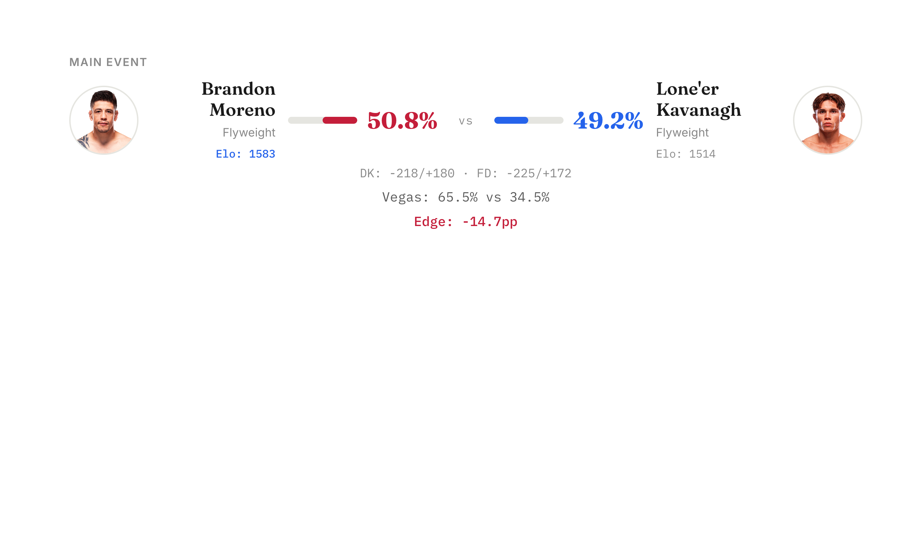

Phase 9.2 model probabilities — February 28, 2026
Mexico City card with 13 fights and 11 value edges. The model disagrees with Vegas on nearly every fight, which usually means a lot of low-data fighters the model is guessing on. First live test last week: 7/10 correct (70.0%) on the Strickland card. 78.3% overall across 138 tracked fights.


Main Event: Moreno vs Kavanagh
The model sees a coin flip at 50.8% Moreno. Vegas has him at 65.5%. Moreno is the former champ with 69 Elo points on Kavanagh (1583 vs 1514) and 16 more UFC fights. But Kavanagh is 5.5 years younger, and Moreno hasn't fought in 105 days while Kavanagh has been more active. The model is weighting activity and age heavily here, but 50/50 on a fight Vegas prices at 65/35 feels like the model is undervaluing championship experience.
Biggest Edge: Borjas (+56.2pp vs Vegas)
Vegas has Rodriguez as a massive -455 favorite. The model flips it completely — 77.8% Borjas. The driver: Rodriguez hasn't fought in over 12 years (diff_days_since_last_fight: 4,635 days). He's also 12.6 years older. The model treats a 12-year layoff as near-fatal. Vegas presumably knows something about Rodriguez's actual fighting ability that raw stats can't capture. This is the kind of fight where the model's limitations are on full display — treat this edge with extreme skepticism.
Second Biggest Edge: Medina (+39.9pp vs Vegas)
Vegas prices Gandra as an 83.3% favorite. The model gives Medina 56.6%. Gandra has a 48-point Elo advantage and +32 momentum, but the model sees his 197-day layoff and 7-year age gap as serious liabilities. Both fighters have near-default Elos (1500 vs 1452), meaning the model barely has data on either. When the model and Vegas disagree by 40 points on fighters it barely knows, Vegas is probably right.
Results recap after the event.